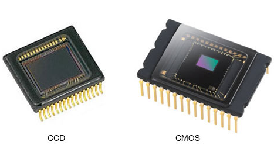

Les images numériques et les capteurs
Les images numériques
Une image numérique est une représentation visuelle composée de milliers (ou millions) de petits points appelés pixels, enregistrés sous forme de données informatiques. Chaque pixel contient des informations de couleur et de luminosité, ce qui permet à l’image d’être affichée sur un écran, modifiée avec des logiciels et stockée sur des supports numériques. Contrairement à une image argentique, elle peut être facilement copiée, retouchée et partagée sans perte de qualité.
Les capteurs
Un capteur est un composant électronique présent dans un appareil photo numérique qui capte la lumière et la transforme en signal électrique, ensuite converti en image numérique. Il joue un rôle essentiel, car c’est lui qui remplace la pellicule dans les appareils modernes.
Les types de capteurs principaux
Capteur CCD (Charge-Coupled Device)
Un capteur CCD (dispositif à transfert de charge) est un composant électronique semi-conducteur utilisé en imagerie numérique pour convertir la lumière (photons) en signal électrique (électrons). Il offre une excellente qualité d’image et une grande précision des couleurs, mais consomme plus d’énergie.
Capteur CMOS (Complementary Metal-Oxide Semiconductor)
Un capteur CMOS est un composant électronique photosensible qui convertit la lumière (photons) en signal électrique pour créer des images numériques. Il est plus rapide et moins énergivore que le CCD, il est aujourd’hui le plus utilisé dans les appareils photo et smartphones.

Comment fonctionne un capteur photo ?
- La lumière entre à travers l’objectif de l’appareil photo.
- Elle passe par un filtre de couleurs (rouge, vert, bleu).
- Le capteur, composé de pixels, capte cette lumière.
- Chaque pixel transforme la lumière en signal électrique.
- Le signal est converti en données numériques.
- L’image est traitée (couleurs, luminosité, contraste).
- L’image finale est créée.
- L’image est enregistrée et affichée.
Quelles sont les caractéristiques d'une image numérique ?
- Résolution : nombre total de pixels (ex : 1920 × 1080).
- Définition : dimensions de l’image (largeur × hauteur).
- Pixels : plus petites unités composant l’image.
- Profondeur de couleur : nombre de couleurs possibles (8 bits, 16 bits...).
- Format de fichier : JPEG, PNG, RAW, etc.
- Compression : avec ou sans perte de qualité.
- Taille du fichier : poids de l’image (Ko, Mo).
- Espace colorimétrique : RGB, CMJN selon l’usage.
Capteur CCD et capteur CMOS
| Caractéristique | CMOS | CCD |
|---|---|---|
| Consommation | Faible | Élevée |
| Vitesse | Rapide | Lente |
| Qualité d’image | Très bonne | Excellente |
| Bruit numérique | Plus élevé (amélioré) | Très faible |
| Coût | Moins cher | Plus cher |
| Utilisation | Smartphones, appareils modernes | Domaines scientifiques |
Certains capteurs modernes sont si sensibles qu’ils peuvent capter la lumière infrarouge, invisible à l’œil humain. Les scientifiques utilisent même des capteurs spéciaux pour observer des phénomènes astronomiques ou suivre la vie animale dans l’obscurité totale.
Vidéo explicative
Voici ci-dessous une vidéo nous renseignant sur les capteurs numériques